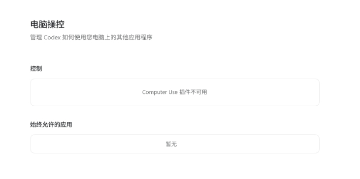
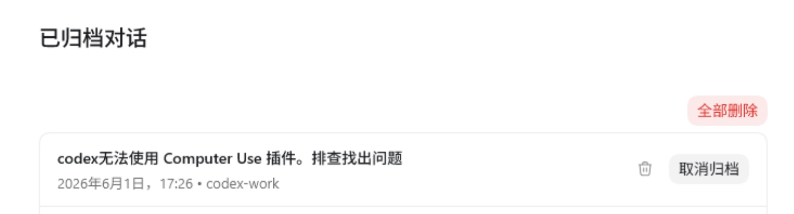
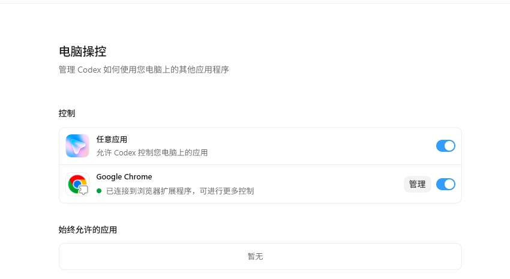

AI TECH REPORT
Codex 调不出 Chrome？
Computer Use 也不可用？这次问题可能不是 API key。
@chrome unavailable
Computer Use 插件不可用
Computer Use 插件不可用
Computer Use 也不可用？这次问题可能不是 API key。
电脑操控页面里，Computer Use 入口直接不可用，插件能力没有进入当前会话。

很多人会先怀疑扩展、key 或功能开关，但这次根因不在这里。
Codex 当前版本需要读取 .agents/plugins/marketplace.json。只放根目录 marketplace.json 不够。
先形成可复现修复记录，再把方案沉淀成 README 和脚本。

任意应用和 Google Chrome 都恢复可控，Chrome 扩展也已连接。

这不是破解，只是让 Codex 正确读取自己安装包里已带的官方 bundled 插件。